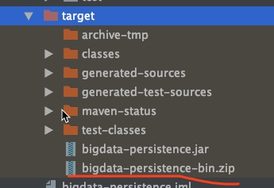

背景
还记得我们曾经经历过的上线部署流程吗？是否为此感到痛苦和纠结。在之前接触过的部署方式中，遇到了以下问题：
- 部署上线靠人工管理，不是工具自动化发布
- 目录结构没有规范，通过-classpath 任意指定jar
- 简单直接上fat jar ，全部都打在一个jar中
- 如果是web应用还要提前装好容器 如tomcat才能使用
线上参数修改要麻烦运维
其中还有回滚问题 如果没有自动化运维平台那么回滚是一件非常头痛的事情。不论前后端都是这样
这里不能一一列举部署中出现的问题，但是我们这里只关注闭环java应用带来的好处。我们将从以下几个方面进行介绍
部署应用的流程
什么是闭环java应用&优点
实现方式
部署应用流程
从上图中可以看出由三个部分构成
项目
你的工程项目 包括源代码 配置文件 启停脚本 等等，并且我们安装一定的目录规范来进行开发
非web 工程
执行 mvn clean package -P dev 后打包效果如下
web 工程

执行打包命令后 效果如下：
自动化发布系统
自动化发布系统是其中重要的一环，它的基本功能包括应用的打包，抽取，部署代码，包管理和命令的执行等。
除了这些功能外，还有版本管理，混滚，灰度发布，分组管理机器（不同机房的配置不一样），配置中心功能（动态修改配置参数，或者脚本，jvm参数等等）。一般在相对大的公司都会有专门的团队来开发这些功能
宿主机
宿主机就是我们代码运行的机器，默认配置应当最小化，比如只包含运维管理用的agent和指定版本的jdk 等。一些非必要安装的软件应当由应用程序以配置文件的方式指定
总结
通过这三方面的共同协作使我们能够更好的统一管理、发布、回滚我们的应用
动手闭环你的应用
这里的闭环是指，你的Java应用程序，配置文件，启停脚本等都在java程序里维护，修改任何的参数配置文件，或者容器的类型都不需要登录宿主机来修改。宿主机只提供基本统一的运行环境即可。比如我们所有的服务默认都只提供jdk8.tomcat等web容器默认不安装，如有需求，通过配置文件进行指定即可。
通过闭环我们的Java应用我们能得到以下好处
- 统一修改应用程序代码、配置文件、运行环境
- 将程序的控制权掌握在我们的手中，减少和运维的沟通成本
构建非web应用
项目结构

本例是一个普通的java 服务，一次运行。创建类似RPC服务也是一样的
maven依赖 pom配置
- profile
<profiles>
<profile>
<id>production</id>
<properties>
<deploy.type>production</deploy.type>
</properties>
</profile>
<profile>
<id>staging</id>
<properties>
<deploy.type>staging</deploy.type>
</properties>
</profile>
<profile>
<id>test</id>
<properties>
<deploy.type>test</deploy.type>
</properties>
</profile>
<profile>
<id>dev</id>
<properties>
<deploy.type>dev</deploy.type>
</properties>
<activation>
<activeByDefault>true</activeByDefault>
</activation>
</profile>
</profiles>
- assembly插件
<build>
<finalName>bigdata-persistence</finalName>
<resources>
<resource>
<directory>src/main/resources</directory>
<filtering>true</filtering>
</resource>
<resource>
<directory>src/main/resources.${deploy.type}</directory>
<filtering>true</filtering>
<targetPath>config</targetPath>
</resource>
</resources>
<plugin>
<groupId>org.apache.maven.plugins</groupId>
<artifactId>maven-jar-plugin</artifactId>
<version>2.4</version>
<!-- The configuration of the plugin -->
<configuration>
<!-- Configuration of the archiver -->
<archive>
<addMavenDescriptor>false</addMavenDescriptor>
<manifest>
<addClasspath>true</addClasspath>
<classpathPrefix>lib/</classpathPrefix>
<mainClass>xxx.Bootstrap</mainClass>
</manifest>
<manifestEntries>
<Class-Path>.</Class-Path>
</manifestEntries>
</archive>
</configuration>
</plugin>
<plugin>
<groupId>org.apache.maven.plugins</groupId>
<artifactId>maven-assembly-plugin</artifactId>
<version>2.4</version>
<configuration>
<descriptors>
<descriptor>src/main/assembly/assembly.xml</descriptor>
</descriptors>
</configuration>
<executions>
<execution>
<id>single</id>
<phase>package</phase>
<goals>
<goal>single</goal>
</goals>
</execution>
</executions>
</plugin>
<plugin>
<groupId>org.apache.maven.plugins</groupId>
<artifactId>maven-compiler-plugin</artifactId>
<version>3.1</version>
<configuration>
<source>1.8</source>
<target>1.8</target>
</configuration>
</plugin>
</plugins>
</build>
- assembly配置文件
<assembly>
<id>bin</id>
<!-- 最终打包成一个用于发布的zip文件 -->
<formats>
<format>zip</format>
</formats>
<!-- Adds dependencies to zip package under lib directory -->
<dependencySets>
<dependencySet>
<!--
不使用项目的artifact，第三方jar不要解压，打包进zip文件的lib目录
-->
<useProjectArtifact>false</useProjectArtifact>
<outputDirectory>lib</outputDirectory>
<unpack>false</unpack>
</dependencySet>
</dependencySets>
<fileSets>
<!-- 把项目相关的说明文件，打包进zip文件的根目录 -->
<fileSet>
<directory>${project.basedir}</directory>
<outputDirectory>/</outputDirectory>
<includes>
<include>README*</include>
<include>LICENSE*</include>
<include>NOTICE*</include>
<include>NOTICE*</include>
</includes>
</fileSet>
<!-- 把项目自己编译出来的jar文件，打包进zip文件的根目录 -->
<fileSet>
<directory>${project.build.directory}</directory>
<outputDirectory></outputDirectory>
<includes>
<include>*.jar</include>
</includes>
</fileSet>
<fileSet>
<directory>src/main/script</directory>
<outputDirectory>/script</outputDirectory>
<includes>
<include>**</include>
</includes>
</fileSet>
</fileSets>
</assembly>
执行mvn clean package -P prod 生成目录如下图

解压缩后
我这里是将所需要的文件统一打包成zip 然后自动化发布系统会根据我的部署脚本解压到相应的目录位置
启动类
public class Bootstrap {
private static Map<String, IPersistence> map;
static {
List<IPersistence> persistenceList = Lists.newArrayList();
persistenceList.add(new AfentiDynamicPersistence());
persistenceList.add(new AfentiDynamicCallPersistence());
persistenceList.add(new AfentiReportUserPersistence());
persistenceList.add(new AfentiLittleReport());
persistenceList.add(new WrongQuestionPersistence());
persistenceList.add(new WrongQuestionPersistenceNew());
map = persistenceList.stream().collect(Collectors.toMap(p -> p.getClass().getSimpleName(), p -> p));
}
public static void main(String[] args) {
if (args.length < 3) {
System.out.println("must at least three param[className,filePath,prefix]");
System.exit(1);
}
String className = args[0];
String[] newArgs = Arrays.copyOfRange(args, 1, args.length);
map.get(className).start(newArgs);
}
启动脚本
#!/usr/bin/env bash
source /etc/profile
export JAVA_HOME=/data/soft/jdk1.8.0_45
export PATH=$JAVA_HOME/bin:$PATH
export CLASSPATH=.:$JAVA_HOME/lib/dt.jar:$JAVA_HOME/lib/tools.jar:$JAVA_HOME/jre/lib/rt.jar
to_day=`date +%Y-%m-%d`
if [ $# -gt 0 ];then
to_day=`date +%Y-%m-%d -d "$1"`
fi
JAR_PATH="$(cd "$(dirname "$0")";pwd)/../../../bigdata-persistence.jar"
LOG_PATH="$(cd "$(dirname "$0")";pwd)/../../../logs"
if [ ! -f ${JAR_PATH} ];then
echo "not found jar file."
exit 10
fi
_BASE_PATH_="/data/hadoop/tmp/afenti/dynamic/${to_day}"
_dynamic_opened_class_file_="${_BASE_PATH_}/_afenti_dynamic_opended_class.txt"
_dynamic_opened_school_file_="${_BASE_PATH_}/_afenti_dynamic_opended_school.txt"
_dynamic_call_class_file_="${_BASE_PATH_}/_afenti_dynamic_call_class_.txt"
_dynamic_call_school_file_="${_BASE_PATH_}/_afenti_dynamic_call_school_.txt"
java -jar "${JAR_PATH}" "AfentiDynamicPersistence" "${_dynamic_opened_class_file_}" "class#" || ( echo "xxx";exit 11 )
java -jar "${JAR_PATH}" "AfentiDynamicPersistence" "${_dynamic_opened_school_file_}" "school#" || ( echo "xxx";exit 12 )
java -jar "${JAR_PATH}" "AfentiDynamicCallPersistence" "${_dynamic_call_class_file_}" "class#call#" || ( echo "xxx";exit 13 )
java -jar "${JAR_PATH}" "AfentiDynamicCallPersistence" "${_dynamic_call_school_file_}" "school#call#" || ( echo "xxx";exit 14 )
构建web应用
通过springboot来构建非web/web应用
工程目录
maven 依赖
<dependency>
<groupId>org.springframework.boot</groupId>
<artifactId>spring-boot-starter-web</artifactId>
</dependency>
修改springboot的打包方式为assembly
springboot 提供了默认的打包方式
<plugin>
<groupId>org.springframework.boot</groupId>
<artifactId>spring-boot-maven-plugin</artifactId>
</plugin>
修改为assembly打包方式 方便自己管理
<plugin>
<groupId>org.apache.maven.plugins</groupId>
<artifactId>maven-jar-plugin</artifactId>
<version>2.4</version>
<!-- The configuration of the plugin -->
<configuration>
<!-- Configuration of the archiver -->
<archive>
<addMavenDescriptor>false</addMavenDescriptor>
<manifest>
<addClasspath>true</addClasspath>
<classpathPrefix>lib/</classpathPrefix>
<mainClass>xxxx.Application</mainClass>
</manifest>
<manifestEntries>
<Class-Path>.</Class-Path>
</manifestEntries>
</archive>
</configuration>
</plugin>
<plugin>
<groupId>org.apache.maven.plugins</groupId>
<artifactId>maven-assembly-plugin</artifactId>
<version>2.4</version>
<configuration>
<descriptors>
<descriptor>src/main/assembly/assembly.xml</descriptor>
</descriptors>
</configuration>
<executions>
<execution>
<id>single</id>
<phase>package</phase>
<goals>
<goal>single</goal>
</goals>
</execution>
</executions>
</plugin>
<plugin>
<groupId>org.apache.maven.plugins</groupId>
<artifactId>maven-compiler-plugin</artifactId>
<version>3.1</version>
<configuration>
<source>1.8</source>
<target>1.8</target>
</configuration>
</plugin>
打包结果如下：
启动类
```
@EnableAutoConfiguration(exclude = {MultipartAutoConfiguration.class})
@ComponentScan("com.vox_learning.phoniex.web")
@EnableDiscoveryClient
@EnableFeignClients
@EnableAdminServer
@EnableHystrix
@EnableHystrixDashboard
public class Application {
public static void main(String[] args) {
SpringApplication.run(Application.class, args);
}
}
```
启动脚本
export JAVA_HOME="/usr/java/jdk1.8.0_45/"
export PATH="${JAVA_HOME}/bin/":$PATH
echo `java -version`
nohup java -agentlib:jdwp=transport=dt_socket,address=12345,server=y,suspend=n -jar phoniex-web.jar >logs/phoniex-web.log 2>&1 &
总结
- 多种方式 结合docker
- 闭环的好处 *
springboot的好处就是化繁为简需要的功能按需添加 并且实现了零配置。从头开始搭建一个新工程还是比较容易的。打包方式我们也可以使用之前的assembly方式来闭环我们的应用。我们还可以结合docker ，一个docker 直接部署一个jvm，实现弹性快速部署。
创建闭环的java应用可以让我们更容易的管理自己的项目 修改jvm 参数，修改容器配置文件，部署方式等工作。